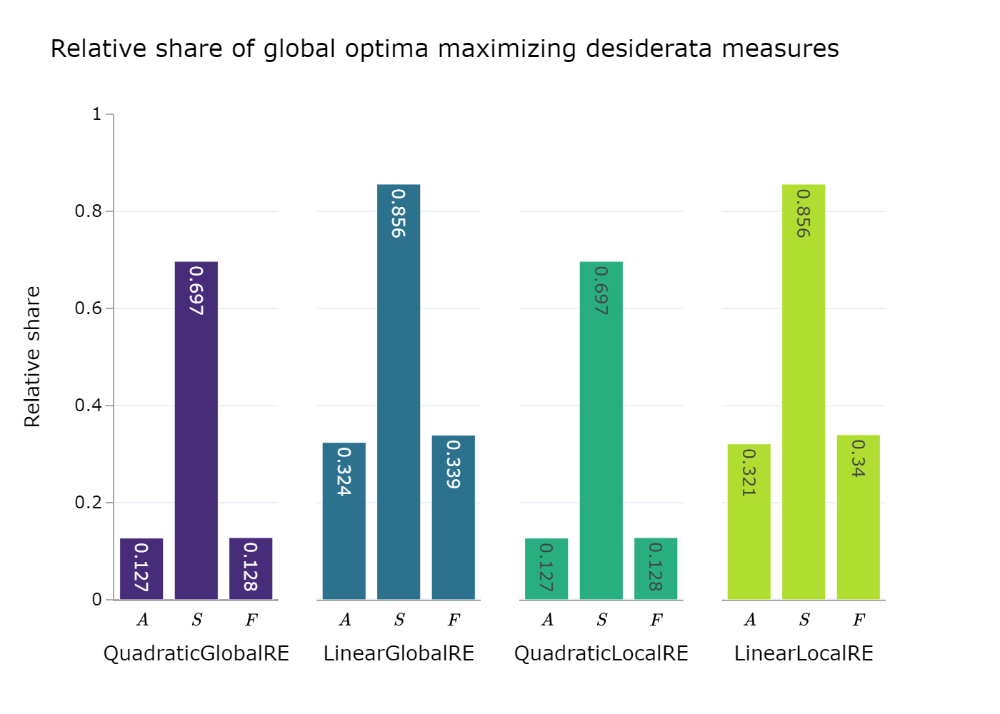
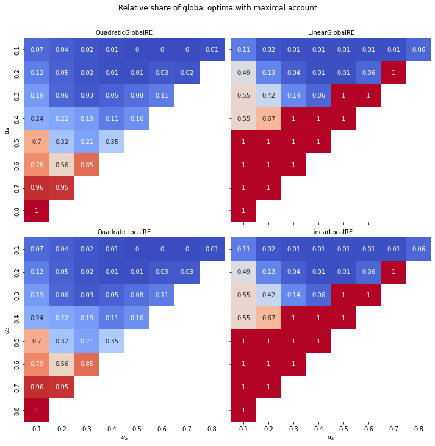
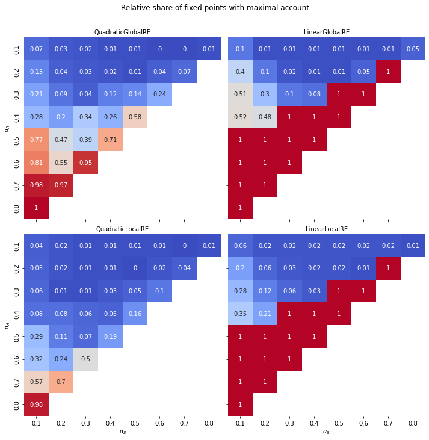
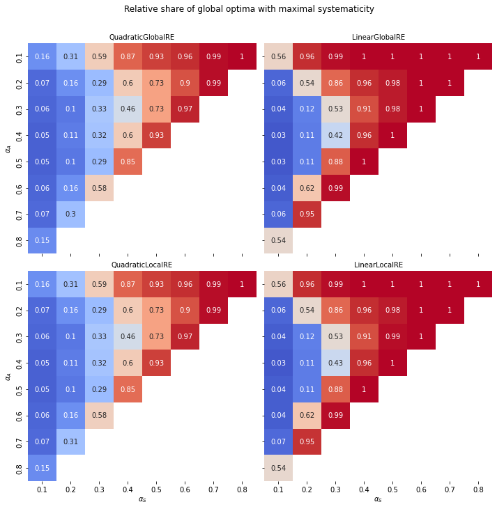
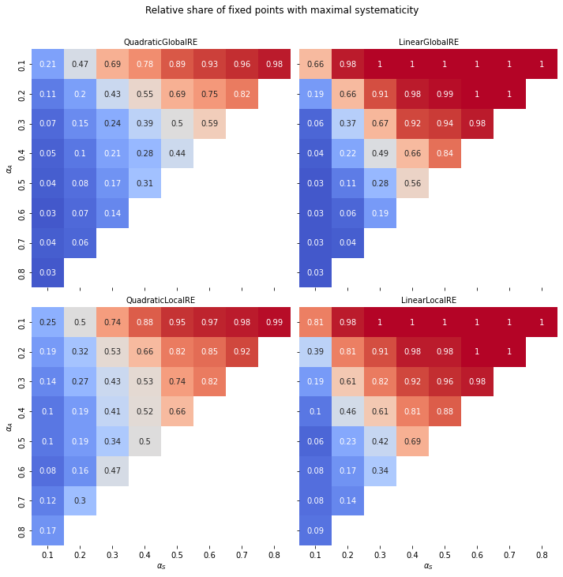

| Model | Number of global optima with maximal account | Number of global optima with maximal systematicity | Number of global optima with maximal faithfulness | Number of global optima | Relative share of global optima with maximal account | Relative share of global optima with maximal systematicity | Relative share of global optima with maximal faithfulness |
|---|---|---|---|---|---|---|---|
| QuadraticGlobalRE | 8167 | 44715 | 8185 | 64141 | 0.127 | 0.697 | 0.128 |
| LinearGlobalRE | 19430 | 51305 | 20301 | 59949 | 0.324 | 0.856 | 0.339 |
| QuadraticLocalRE | 8150 | 44685 | 8183 | 64071 | 0.127 | 0.697 | 0.128 |
| LinearLocalRE | 19163 | 51077 | 20297 | 59682 | 0.321 | 0.856 | 0.34 |
6 Extreme values for account and faitfulness
6.1 Background
In this study we examine extreme values from measures of account and faithfulness.
\(A(C, T) = 1\) means that the theory \(T\) fully and exclusively accounts for the commitments \(C\). Full and exclusive account is a condition for full RE states. Conversely, \(A(C, T) = 0\) holds if a theory completely fails to account for commitments, that is, for every sentence in the commitments the closure theory does not contain this sentence, or contradicts the theory.
The measure of systematicity for a theory \(\mathcal{T}\) is defined as follows: \[ S(\mathcal{T}) = G(\frac{\vert \mathcal{T}\vert -1}{\vert\overline{\mathcal{T}}\vert }) \]
Hence, \(S(\mathcal{T}) = 1\) if and only if \(\vert \mathcal{T}\vert = 1\), i.e., \(\mathcal{T}\) is a singleton theory, e.g., \(\mathcal{T} =\lbrace s\rbrace\). Note that it does not matter whether \(G\) is linear or quadratic. Furthermore, \(S(T) = 0\) if and only if \(\mathcal{T}=\emptyset\) by definition.
\(F(C \vert C_{0}) = 1\) holds if and only if the initial committments \(C_{0}\) are a subset of the commitments \(C\) (expansions of the initial commitments are not penalized). \(F(C \vert C_{0})\) attains the minimal value of 0, if every sentence of the initial commitments \(C_{0}\) is missing in or contradicted by the commitments \(C\).
6.2 Method
During the ensemble generation, the values for account and faithfulness are calculated for every global optimum and fixed point for each simulation setup. The systematicity value has not been stored, but extreme values can (easily) be determined by considering the length (i.e. the number of sentences) in the theory.
Note that the information about the values of measures has not been stored in the dataframe for fixed points from all branches. Thus, the current study only includes results concerning unique fixed points reached from each simulation setup
6.3 Results
6.3.1 Overall
6.3.1.1 Minimal values
There is no simulation setup which resulted in a global optimum or a fixed point that has a minimal value for the measure of account, systematicity or faithfulness. Consequently, we can exclude the consideration of minimal values from the subsequent analysis.
This is a desirable result, as minimal values for would constitute quite strange behaviour of the model variants. For example, \(F(C\,\vert\,C_{0}) = 0\) would mean that an agent completely departed from their initial commitments \(C_{0}\), which could amount to the undesirable outcome of changing the subject matter.
6.3.1.2 Maximal values

| Model | Number of fixed points with maximal account | Number of fixed points with maximal systematicity | Number of fixed points with maximal faithfulness | Number of fixed points | Relative share of fixed points with maximal account | Relative share of fixed points with maximal systematicity | Relative share of fixed points with maximal faithfulness |
|---|---|---|---|---|---|---|---|
| QuadraticGlobalRE | 7482 | 22990 | 9244 | 41725 | 0.179 | 0.551 | 0.222 |
| LinearGlobalRE | 11893 | 23756 | 17311 | 32210 | 0.369 | 0.738 | 0.537 |
| QuadraticLocalRE | 8353 | 25863 | 5100 | 55643 | 0.15 | 0.465 | 0.092 |
| LinearLocalRE | 14661 | 11364 | 8136 | 22907 | 0.64 | 0.496 | 0.355 |

6.3.2 Grouped by configuration of weights
6.3.2.1 Account


6.3.2.2 Systematicity


6.3.2.3 Faithfulness


6.4 Conclusion (old)
The frequency of minimal values for account and faithfulness in LDS is extremely small and they occur in one ensemble (07), only. Moreover, the extreme values for faithfulness and systematicity correlate with extreme, coresponding weights (\(\alpha_{F} \leq 0.2\) and \(\alpha_{A}\leq 0.2\)).
The occurence of singleton theories in global optima and fixed points might make for an intersting exploration in the future.